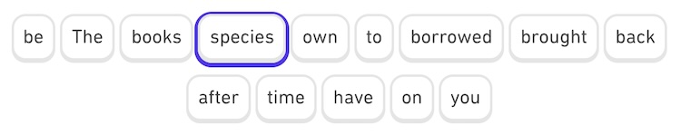
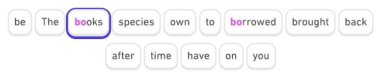

This extension makes Duolingo more usable with keyboard, by injecting CSS styles that make keyboard focus on buttons and options clearly visible when you use Tab key to go forward and Shift + Tab to go backward through interactive elements.
It should activate automatically whenever you reload the Duolingo tab or switch to it from another tab. But in case it doesn't happen, click the button below.
You'll recognize that it's on when you see a bluish border around buttons when you browse through them with Tab (forward) or Shift Tab (backward)
Making users able to navigate any website using Tab key is an accessibility requirement that everyone should take seriously. In most cases, all it takes to meet this requirement is NOT to interfere with keyboard navigation or hide tab focus styles.
But many websites deliberately do it, because keyboard focus styles don't look fancy enough. Unfortunately, in 2024 Duolingo is one of such websites.
If you try tabbing through buttons and options in any lesson, you simply won't see where your focus is. You can press Enter to submit the question, and if you start typing some of offered words from Word bank, you will have initial letters colored in blue, which is a nice feature and I further emphasized it by improving the contrast of these letters.
But, the main thing is that you should see where you go with the Tab key. That's a darn STANDARD, mostly because of:
So, not complying to this standard SUCKS. It especially sucks in case of Duolingo, since they otherwise do their social mission quite well when it comes to promoting gender and racial equality. So, all they need to do is to do the same with accessibility.
Therefore, I sincerely hope that Duolingo will take steps to fix their keyboard navigation out of the box, even if that will make my efforts in making this extension obsolete.
Be careful when using the extension if you aren't used to tab keys. Especially keep your hand away from Enter key, because you might submit the wrong answer and lose hearts ❤️❤️❤️ just when you need them 😱
Also mind that if Duolingo changes CSS selectors in any future redesign, some functionalities of Dukey plugin might just stop working.
But I hope they'll make it easier for everyone and enable keyboard navigation out of the box, which essentially only means to STOP DISABLING IT.
Cheers everyone and long live all the languages!
ğŸğŸ…ğŸ“ğŸ’🌶ğŸ‰ğŸ ğŸ‘🥕ğŸŠğŸ§…🥔🥥ğŸğŸŒ½ğŸ‹ğŸŒğŸ¥‘ğŸğŸˆğŸ¥ğŸ¥¦ğŸ¥’🫑ğŸğŸ¥¬ğŸ«ğŸ†ğŸ‡